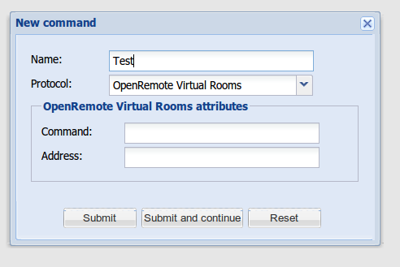

|
This page last changed on Jun 28, 2011 by dinushan.
I'm a newbie and I noticed that there is a protocol OpenRemote virtual rooms in the Designer.
But I don't know how it is used.(commands , addresses etc).
It seems like a great feature for experimenting
 ????!!! 
Can any body please explain this?
|
Yes, you can use any arbitrary string as the command, such as "on" or "off" – any string can be used as an address but you obviously should use the same address string if you want to create two commands "on" and "off" that should represent the same device.
You can use "STATUS" as command to read the values set by your commands (such as "on" and "off" as described above). The status will attempt to resolve the command value into the sensor type – so for example, if you're using "on" and "off" as your command strings, those would resolve correctly for a SWITCH type of sensor with a STATUS command bound to it.
Here's an example:
- Create command "on", address "foo"
- Create command "off", address "foo"
- Create command "status", address "foo"
- Create sensor with type SWITCH and bind it to command "status" of "foo"
- Go to Panel Designer and create a switch and bind it to commands "on" and "off" and "status" for its sensor

Posted by admin at Jun 28, 2011 10:44
|
|
Thanks for your explanation

Posted by dinushan at Jun 29, 2011 07:09
|
|
{kind=link}